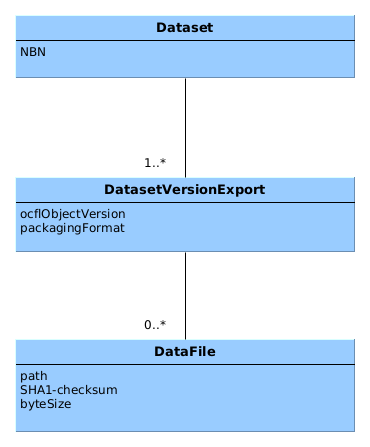

Data Vault Storage Root¶
Introduction¶
The Data Vault is subdivided into Storage Roots, each one containing the long term preservation copies for either a Data Station or a "Vault as a Service" (VaaS) customer. The Data Vault Storage Root (DVSR) can be viewed as a type of interface, or exchange format, albeit an atypical one, as it is aimed at future users, rather than current ones.
dd-data-vault interface
Do not confuse the DVSR with the service interface of dd-data-vault, which is an internal microservice interface that is used by the transfer service to store data in the Data Vault.
OCFL repositories¶
The DANS Data Vault is implemented as an array of OCFL repositories. OCFL stands for Oxford Common File Layout. It is a community specification for the layout of a repository that stores versioned digital objects. Each repository, or "storage root," is one Data Vault Storage Root (DVSR). The Data Stations each have their own DVSR as does each customer of the Vault as a Service.
Extensions¶
OCFL can be extended with additional metadata and functionality. The DANS Data Vault uses the following extensions:
- OCFL Packaging Format extension - This extension defines a way to specify for each version of an object how it is packaged.
- Extension for supporting deletion. TODO.
Dataset model mapping¶
OCFL is a generic storage model. It does not define the concept of a dataset. The DANS archival systems (Data Stations and Vault as a Service), on the other hand, are built around the dataset concept. The mapping between the two models is as follows:
| DANS dataset model | OCFL model |
|---|---|
| Dataset | OCFL Object |
| Dataset Version | OCFL Object Version |
| Datafile | OCFL Content File |
Versions¶
Each Dataset Version Export (DVE) is stored in a separate OCFL Object Version. This means that there is a 1-to-1 mapping between a DVE and an OCFL Object Version. Note however, that it is possible that one dataset version is exported multiple times. The mapping of a dataset version to an OCFL Object is therefore a 1-to-n relationship.
A multiple exports scenario
A scenario where a dataset version is exported multiple times is when the dataset was updated in the Data Station without creating a new version. This can be done by a superuser and is known as "updatecurrent". A new Dataset Version Export will be created and therefore a new OCFL Object Version will be created as well. The Data Station version history, however, will not display an additional version.
Identifying metadata¶
To identify datasets, versions and data files in the OCFL repository, the following metadata is used:

The full metadata of each dataset version is stored, but the way it is stored depends on the packaging format used. The current packaging format is based on Dataverse implementation of RDA BagPack.
Serialization in layers¶
OCFL repositories can be serialized in different ways, for example as a directory structure on a file system, or as objects in an object store. The DANS Data Vault uses the SURF Data Archive tape storage. The tape storage system that is used by Data Archive organizes files in a file-folder structure, so in principle serialization should be the same as to a disk-based files system, from OCFL's perspective. However, the tape storage system requires a minimum file size of 1GB, which is much larger than the typical data file stored in the DANS Data Vault. To meet this requirement, the OCFL repositories are stored as a series of DMFTAR archives, each of which is larger than 1GB. Each archive forms a layer. For a more detailed description of the layers, see the documentation of dans-layer-store-lib.
To restore the OCFL repository, the layers must be extracted in the correct order. SURF provides a utility called dmftar to create and extract DMFTAR archives. This utility is the interface to the tape storage system.
Restoring without the dmftar utility
Even without the dmftar utility, it is possible to restore the OCFL repository, as long as the layers are extracted in the correct order. A DMFTAR archive
is just a lightweight wrapper around a TAR archive, implemented as a directory containing batches of (possibly multi-volume) TAR files along with index
files and a checksum file.